Friday · History
(1947): two dominions, a late border, and mass flight
After the failed and Calcutta burned on (), accelerated British exit. On 14–15 August 1947 Pakistan and India became dominions; the was published after independence. and saw massacres and refugee columns. ’s crisis began at once. Death and displacement figures remain contested estimates.

{kind=link}
“” here names a cluster of facts, not a single myth. It is Britain’s accelerated exit from India; the creating two dominions (India and Pakistan) on 14–15 August 1947; the division of and by the , drawn late and published after independence; the collapse of shared provincial life into communal massacre and flight; and the unfinished business of , above all . It is not only a neat map exercise, not only “inevitable” from 1940, and not only a story that ends when the flags go up. Casualty and displacement totals vary widely across historians and official counts—often cited ranges run from hundreds of thousands to around a million or more killed, and roughly ten to fifteen million displaced. This capsule treats those numbers as contested estimates and does not pretend a single census settled them. May Fourth (1919) and the War of Resistance (1937–45) are earlier Capsules history lessons in related anti-colonial and wartime Asia; they are not the same crisis.
Select any words, or tap a dotted term.
- 1940 Lahore Resolution The , under , adopted the calling for independent states for Muslim-majority areas—later read as the political charter for Pakistan, even though the wording and geography remained contested.
- 1945–46 Postwar elections / Cabinet Mission Britain, exhausted by war, sought a negotiated exit. The (1946) proposed a united India with grouped provinces. and the League could not agree on how power would actually be shared; the plan failed as a working settlement.
- 16 Aug 1946 Direct Action Day The called in support of Pakistan. In Calcutta (Kolkata), communal killing exploded—the “”—and violence spread through the months that followed into Bihar, , and elsewhere.
- Mar 1947 Mountbatten arrives became Viceroy with a brief to transfer power. He concluded that a united India under the formula was not available in time and moved toward on an accelerated timetable.
- 3 Jun 1947 Mountbatten Plan announced The () set out for India and Pakistan, provincial choices, and boundary commissions. Independence was pulled forward to mid-August 1947—months, not years.
- 18 Jul 1947 Indian Independence Act The British Parliament passed the , legally creating two independent dominions and ending British paramountcy over the as of mid-August.
- 14–15 Aug 1947 Two dominions Pakistan’s independence ceremonies ran on 14 August (); India’s on 15 August (). became Governor-General of Pakistan; became Prime Minister of India; stayed briefly as India’s Governor-General.
- 17 Aug 1947 Radcliffe Line published ’s boundary awards for and were published after independence. Villages, canal headworks, and mixed districts learned which they were in when the maps were already political faits accomplis.
- Aug–Dec 1947 Punjab / Bengal flight Communal massacres, train attacks, and forced marches emptied mixed districts. Refugee columns and overcrowded trains moved Hindus and Sikhs toward India and Muslims toward Pakistan. Estimates of the dead and displaced remain disputed.
- Oct–Dec 1947 Kashmir crisis begins Tribal fighters from Pakistan entered ; sought India’s help and signed an . The first India–Pakistan war over followed; the UN became involved. The file did not close in 1947.
- 30 Jan 1948 Gandhi assassinated , who had opposed and spent late 1947 on peace fasts and riot tours, was shot in by . His death sits on the after-edge of the year, not inside the August ceremonies.
- 1971 Bangladesh (later weather) East Pakistan became independent Bangladesh after war with West Pakistan and Indian intervention. Named here only as later weather on the 1947 map that had joined two wings separated by a thousand miles of India.
Before
A failed united-India plan, and a year of killing before any new flag
By 1945 Britain still ruled India, but the war had broken the old timetable. Indian soldiers and labour had served the empire; the Quit India movement of 1942 had been crushed and remembered; the under had grown from a negotiator’s party into a mass claimant for a separate Pakistan; the under leaders including and still wanted a single successor state. Labour’s government in London wanted out without a second Ireland—or a civil war it could not police.
In 1946 the (, , ) offered a united India with provinces grouped and a limited centre. On paper it avoided . In practice and the League could not agree on how groups would work, who would control the centre, or whether the League’s Pakistan demand had been met or buried. The plan failed as a living settlement. Negotiations continued in an atmosphere of distrust while provincial elections had already shown how sharply Muslim and non-Muslim electorates could polarize.
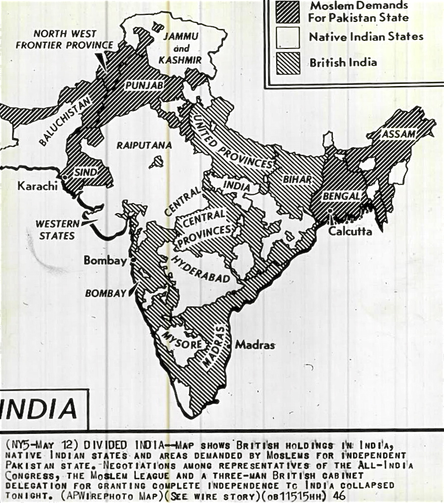
{kind=link}
On the League called . In Calcutta the day became the : communal gangs, police failure, and street massacres that left thousands dead in days. Violence moved through the following months— in , Bihar, and other districts—so that by the time arrived in March 1947, was being debated in a country that had already seen what communal mobilization could do to mixed cities. walked riot districts preaching restraint; the political clock in and London was still counting toward a transfer of power.
The earlier Capsules lessons on May Fourth (1919) and the War of Resistance (1937–45) sit upstream only as reminders that Asian publics had already fought empires and wars for decades. 1947’s crisis is specific: a British exit calendar, two successor dominions, and provinces about to be cut while refugees were already moving.
The era
August flags first; the border maps followed; Punjab burned in between
became Viceroy in March 1947 with instructions to transfer power. He judged that the ’s united framework could not be implemented in time without catastrophic deadlock. On 3 June 1947 he announced a plan for two dominions, provincial choices about joining India or Pakistan, and boundary commissions for and . Independence was set for mid-August—an acceleration that left weeks, not years, to divide armies, treasuries, railways, and districts.
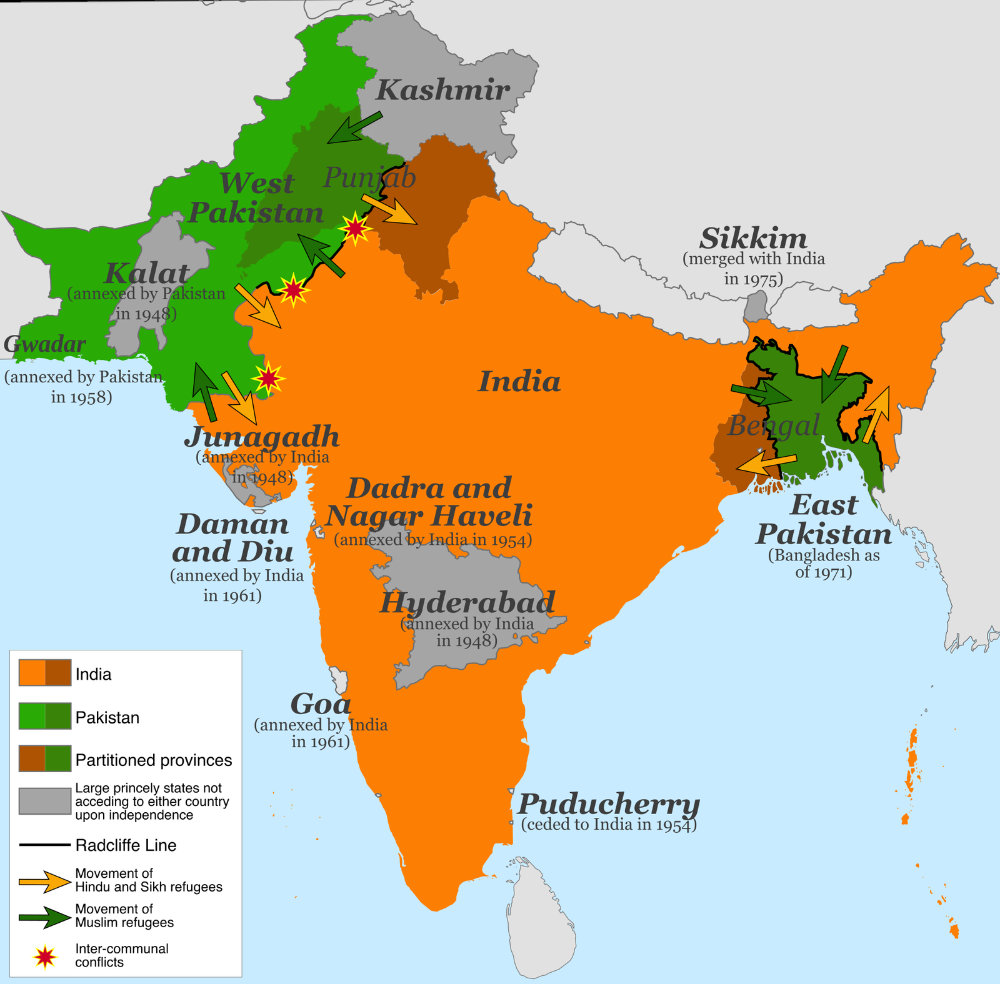
{kind=link}
The received Royal Assent on 18 July 1947. On 14 August Pakistan’s ceremonies ran in : became Governor-General; would head the government. On 15 August in , swore in as Prime Minister of India; the Constituent Assembly heard ’s “.” Both states began as dominions in the Commonwealth. British paramountcy over the lapsed, leaving hundreds of rulers to accede—an unfinished map beside the two new flags.
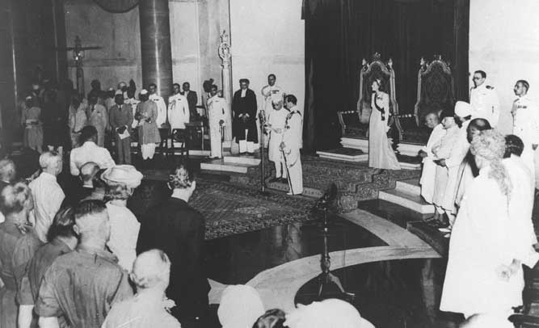
{kind=link}
chaired the boundary commissions. The awards for and were ready under seal and published on 17 August—after independence—so that the new governments would own the shock. Canal headworks, mixed tahsils, and Sikh sacred geography in made every mile explosive. When the line became public, communities that had expected to stay suddenly found themselves on the wrong side of a border guarded by collapsing authority.
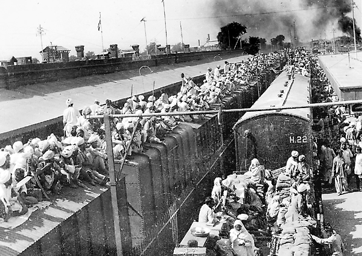
{kind=link}
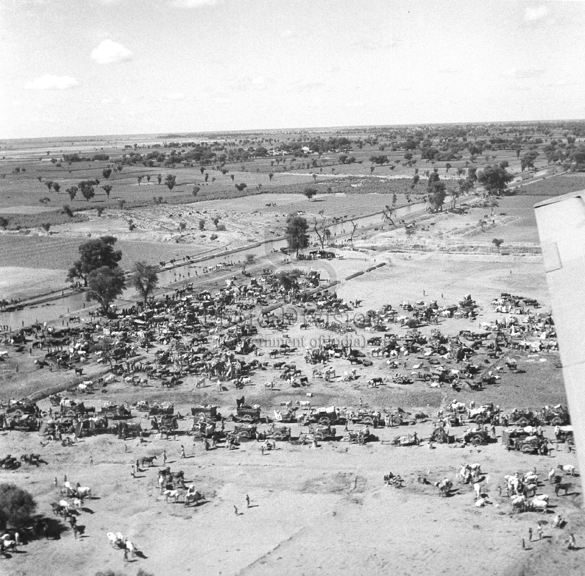
{kind=link}
In the transfer of population became reciprocal ethnic cleansing in all but name. Muslim refugees fled east-to-west toward Pakistan; Hindu and Sikh refugees fled west-to-east toward India. Militias, local police, deserters, and crowds attacked convoys and trains. ’s violence had already begun in 1946 and continued around the new East Pakistan / border, with its own refugee streams. filled with displaced Hindus and Sikhs; Muslims in the capital faced riots and flight. and relief workers toured camps. himself inspected riot damage even as the political story claimed a successful transfer of power.
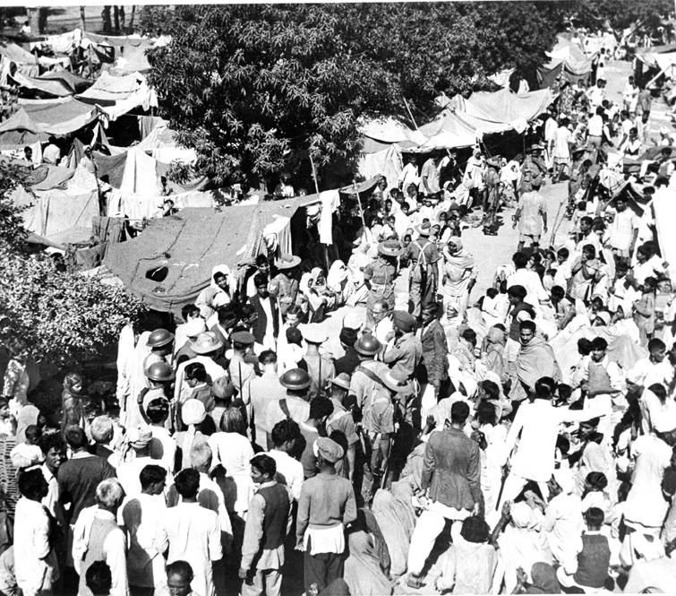
{kind=link}
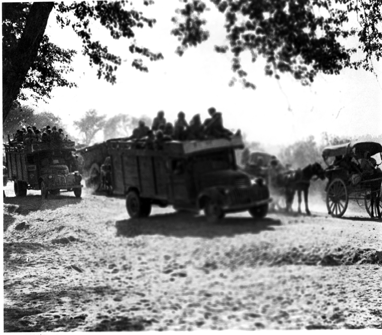
{kind=link}
How many died? Historians and officials have never agreed on a single figure. Scholarly and public estimates commonly range from several hundred thousand to about one million or more deaths, with displacement often placed around ten to fifteen million people across the two new states. Treat any round number you meet in a headline as an estimate with a method behind it—or without one. The archival fact is mass killing and mass flight in a compressed season; the precise body count remains contested.

{kind=link}
How it showed up
A Viceroy on a stopwatch, two dominion founders, a late mapmaker, and Gandhi off the August stage
was negotiated by a small set of names who then lost control of the street. owned the timetable. owned the League’s Pakistan demand. and Patel owned ’s acceptance of division as the price of a central government that could actually function. Radcliffe owned a pair of lines drawn too late to be soft. refused to treat the division as a moral success and spent the season on fasts and peace tours. Around them stood in , provincial premiers, Sikh leaders facing a split , and princely rulers suddenly without a paramount power.
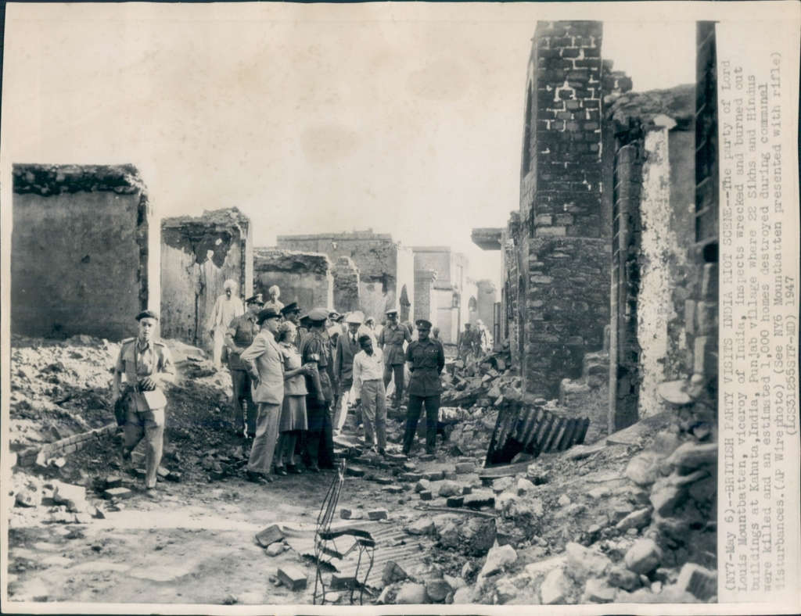
{kind=link}
Louis Mountbatten
1900–1979
Last Viceroy and briefly Governor-General of independent India. He replaced a slower exit with the and an August deadline, arguing that delay meant worse civil war. Critics still blame the speed for the scale of ’s collapse; defenders answer that authority was already failing. For this capsule he is the official who made the calendar the policy.
(with Edwina and ) at Independence Day celebrations, , 1947.Wikimedia Commons / public domain
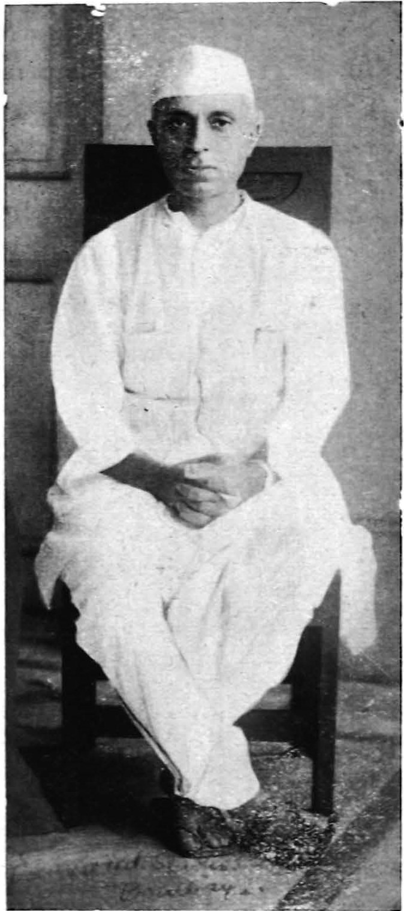
Jawaharlal Nehru
1889–1964
’s central figure at the transfer of power. He accepted as the cost of a workable centre after the failed, delivered “,” and then governed a absorbing millions of refugees while fighting over . His secular rhetoric and the communal facts of 1947 sat in permanent tension.
. leader and first Prime Minister of independent India.Wikimedia Commons / public domain
{kind=link}
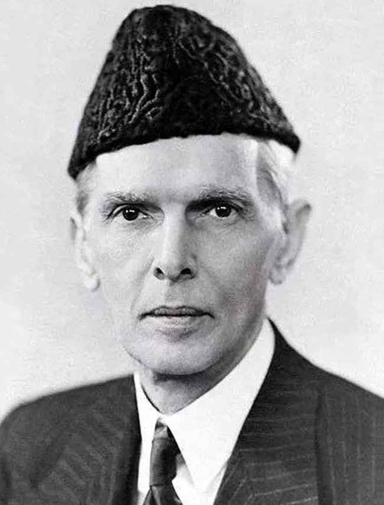
Muhammad Ali Jinnah
1876–1948
The lawyer-politician who turned Pakistan from a debated demand into a state with a date. He insisted on parity and then on when a united centre looked, to the League, like permanent minority status. As Governor-General he inherited a moth-eaten Pakistan split into two wings and immediately entangled in . He died in September 1948.
, circa 1945. Leader of the and first Governor-General of Pakistan.Wikimedia Commons / public domain
{kind=link}
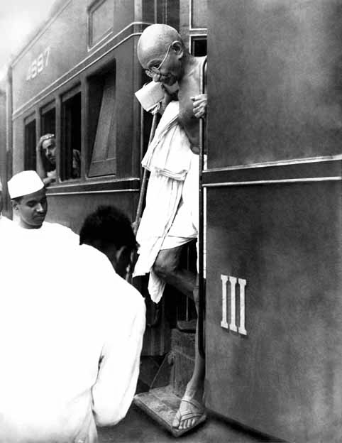
Mohandas K. Gandhi
1869–1948
He opposed dividing India on communal lines, toured riot areas including , and fasted in Calcutta and to stop killing. He did not sign the into being. murdered him on 30 January 1948—after the flags, during the long emergency of refugee politics and revenge.
at a railway station (earlier public-domain photograph). In 1947 he was not the author of the ; he was its most famous Indian opponent on moral grounds.Wikimedia Commons / public domain
{kind=link}
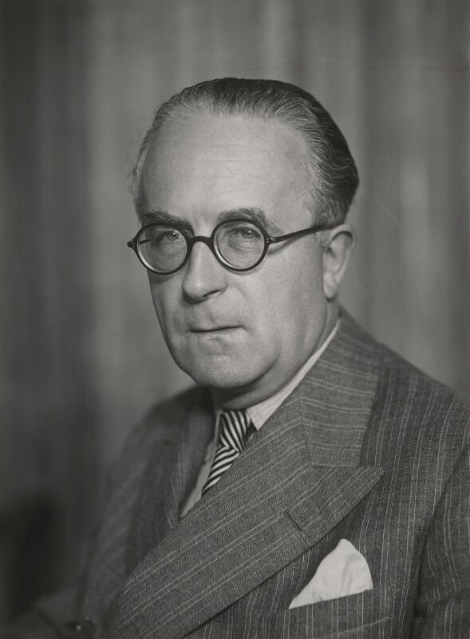
Cyril Radcliffe
1899–1977
Brought in late, given incomplete data and an impossible deadline, he produced awards published after independence. He became a lasting symbol of how bureaucratic mapmaking can decide millions of lives while remaining personally remote from the districts cut.
(Elliott & Fry portrait). The lawyer who chaired the and boundary commissions.Elliott & Fry / National Portrait Gallery / Wikimedia Commons / CC BY 3.0
{kind=link}
Other names thicken the file. drove princely integration for India. became Pakistan’s first prime minister. of hesitated, then signed an to India in October 1947 after tribal forces crossed from Pakistan—opening the first war over the state. Sikh leaders faced a split that severed shrines from populations. None of these careers fit inside a single independence-day photograph.

{kind=link}
Same time elsewhere
Palestine’s UN map, Indonesia’s Dutch war, Korea’s parallel, Burma’s assassinated founding
1947 was a year of partitions and exits across more than one empire. On 29 November 1947 the United Nations General Assembly adopted Resolution 181, recommending the of Palestine into Jewish and Arab states with a special regime for Jerusalem. War followed in 1948 as the British Mandate ended. The instrument was an international vote rather than a Viceroy’s June plan, but the shared features are blunt: a late map, contested demography, refugees, and a conflict that outlived the year of decision.
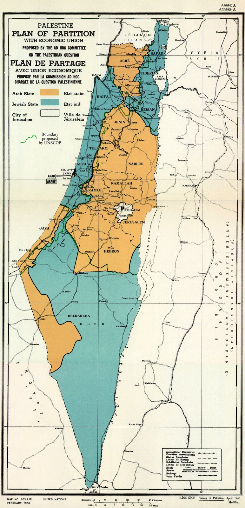
{kind=link}
In Indonesia, and Hatta had proclaimed independence on 17 August 1945—two years almost to the day before Pakistan’s ceremonies. The Dutch returned to reclaim the colony; fighting and negotiation lasted until sovereignty was recognized at the end of the 1940s. Frans Mendur’s photograph of reading the proclamation became a founding image of a republic that still had to survive reoccupation. Decolonization here meant war after the speech, not only a parliamentary act in London.
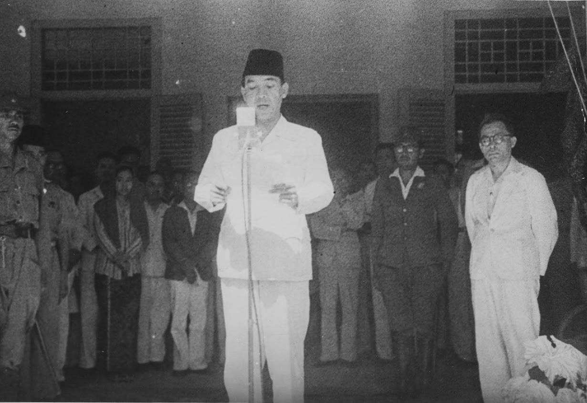
{kind=link}
Korea, freed from Japanese rule in 1945, was divided along the into Soviet and American occupation zones. By 1948 those zones had hardened into separate states; war would follow in 1950. The photograph of U.S. and Soviet personnel meeting at the parallel is an occupation snapshot, not yet the Korean War—but it shows how “temporary” military lines became political borders in the same late-1940s window as Radcliffe’s awards.
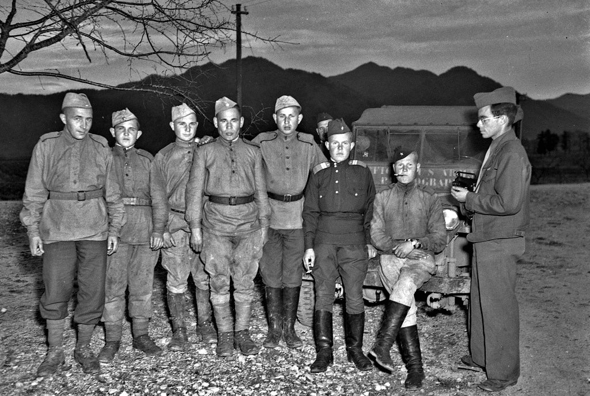
_(4276927463).jpg){kind=link}
In Burma (Myanmar), negotiated toward independence from Britain and was assassinated with several cabinet colleagues on 19 July 1947—weeks before India’s August transfer and months before Burma’s independence on 4 January 1948. The founder did not live to see the flag. Across Southwest and Southeast Asia, the late 1940s stacked exits, partitions, assassinations, and unfinished wars rather than a single orderly “end of empire.”
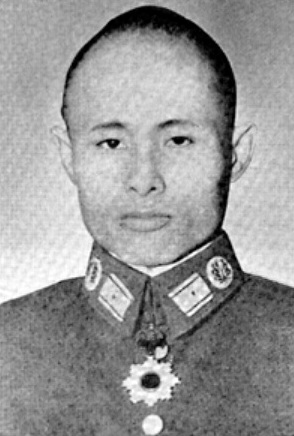
{kind=link}
After
Kashmir’s open file, wars on a two-wing map, and memory that still argues about counts
did not settle in August. In October 1947 tribal fighters from Pakistan entered the state; sought Indian military help and signed an to India. The first India–Pakistan war followed. The United Nations took up the dispute. Ceasefire lines, not a final agreed border, framed the decades that came next. Junagadh and Hyderabad posed other crises that India resolved by political and military pressure; remained the wound that defined the rivalry.
’s assassination on 30 January 1948 closed the year with a funeral train and a political shock. Refugee rehabilitation, property claims, and abducted-women recovery programs filled the early years. Constitutions followed: India became a republic in 1950; Pakistan’s constitutional path was more fractured. was already dead by then.
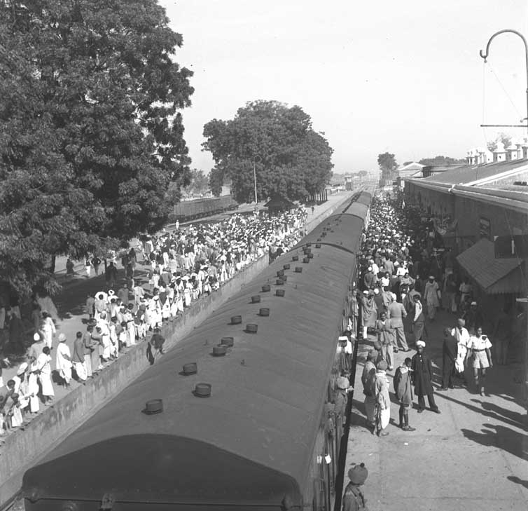
{kind=link}
The two-wing geography of Pakistan—West and East separated by Indian territory—remained a structural strain. In 1971 East Pakistan broke away as Bangladesh after a liberation war and Indian intervention. That war is later weather, not this lesson’s core, but it shows how the 1947 map kept generating new states and new refugee crises.
Memory politics never demobilized. India and Pakistan teach 1947 through different schoolbooks and memorial calendars; museums and oral-history projects collect refugee testimony; casualty figures remain arguments as much as statistics. The honest afterword is that is both a dated constitutional event and an unfinished social fact—families, languages, and borders still living inside its consequences.
A question
A question to keep asking
If the had been published weeks before independence—with more time for people to move under some order—or if had kept a later transfer date, what specifically do you think would have changed in in August–September 1947, and what would likely have stayed just as violent?
Fun fact
Radcliffe had barely seen India
, a British lawyer, arrived in India in July 1947 to chair the boundary commissions for and . He had little prior on-the-ground experience of the subcontinent, worked under extreme time pressure with imperfect maps and census data, and left soon after the awards. The line that sorted millions of lives was drawn by a late-arriving outsider whose maps were published after the new flags were already flying.